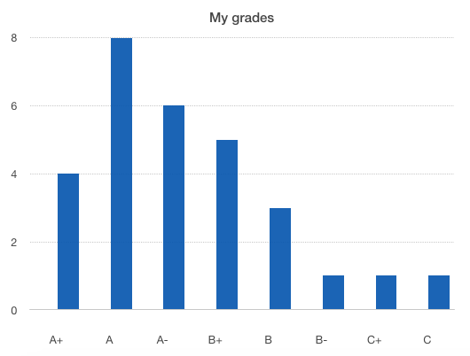

Analyze your data set:
How to structure data for analysis using Enumerable#group_by
March 21, 2015
This week, we’ve been told to choose a public method to discourse about. Among some interesting options, I’ve decided to talk aboutEnumerable#group_by method. The beauty of this method is that it allows you to quickly prepare any set of data to an analysis, according to any rule you want to apply on this analysis.
The simplest way to understand both the method and how it helps you to analyze data is to think of histograms. Histogram is a graphic that shows you the frequencies of a set of data, and it’s a powerful analytics tool. Well, let’s say that we want to know if I’ve been a good student in college. I can share with you my grades dataset. It would look like this:
my_grades = %w{ A A+ A+ A B+ B B+ A- A- B- B A- C+ A- A+ A B A A+ B+ A A A C A A- B+ B+ A-}
By simply looking to it, it’s a little difficult to say anything. But, then, group by is here to save us! The Enumerable#group_by allows us to group our information according to some block we define. In this case, we want to group my grades according to the grades themselves. To do that, we would simply do:
grades_hash = my_grades.group_by {|grade| grade}
And we would get this:
=> {"A"=>["A", "A", "A", "A", "A", "A", "A", "A"], "A+"=>["A+", "A+", "A+", "A+"], "B+"=>["B+", "B+", "B+", "B+", "B+"], "B"=>["B", "B", "B"], "B-"=>["B-"], "A-"=>["A-","A-", "A-", "A-", "A-", "A-"], "C+"=>["C+"], "C"=>["C"]}
We could make it even clearer by doing this:
grades_hash.inject(Hash.new(0)) { |hash, pair| hash[pair[0]] = pair[1].length; hash}
And then, my grade history got so readable:
=> {"A"=>8, "A+"=>4, "B+"=>5, "B"=>3, "B-"=>1, "A-"=>6, "C+"=>1, "C"=>1}
See it in a histogram chart:

If I wanted to simplify the analysis to A-B-C, I could keep using Enumerable#group_by and try this:
grades_hash = my_grades.group_by {|grade| grade[0]}
And then I would get this:
>> {"A"=>["A", "A+", "A+", "A", "A-", "A+", "A", "A", "A+", "A", "A", "A", "A", "A-", "A-", "A-", "A-", "A-"], "B"=>["B+", "B", "B+", "B-", "B+", "B+", "B+", "B", "B"], "C"=>["C+", "C"]}
And just like i have just replaced my old block 'grade' for 'grade[0]', group by accepts any block you want to. Another example:
(1..6).group_by{|i| i%3}
=> {1=>[1, 4], 2=>[2, 5], 0=>[3, 6]}
You see? So, that’s how Enumerable#group_by can be your best friend on setting up an analysis frame!